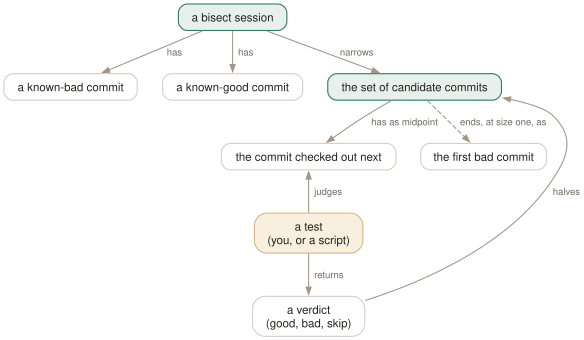

Day 16
Bisect
Binary search over history: which commit broke it, in log₂(n) tests, by hand or by script.
By the end of today you can
- find the commit that introduced a regression in a few steps, starting from one good and one bad commit
- hand the whole search to a script with
git bisect run, using the exit-code contract correctly - bisect something that is not a bug — a speed-up, a behaviour change — with custom terms
History is sorted, so search it
If the bug is present now and was absent at the last release, then somewhere between those two commits there is a first commit that has it. You do not need to read any of them to find it. Check out the one in the middle and test it; whichever half the answer rules out, discard. git bisect does the bookkeeping, and turns an afternoon of reading diffs into a handful of test runs.
$ git bisect start HEAD v1.0
Bisecting: 14 revisions left to test after this (roughly 4 steps)
[32535859ef4bd295a18c2147a6c6b48ecf5a8f6a] Change 15
Twenty-nine candidates, four more steps after this one. git has detached HEAD at the midpoint and is waiting for a verdict. The good commit can be given more than once — several known-good tags, for instance — and each one prunes more history.

A session by hand
At each step, test the checked-out commit however you like — run the program, open the page, run one test — and answer:
$ ./calc.sh
4
$ git bisect good
Bisecting: 7 revisions left to test after this (roughly 3 steps)
[f952f4e8666e148979abe0b0d9ee2662354e3959] Change 22
$ ./calc.sh
5
$ git bisect bad
Bisecting: 3 revisions left to test after this (roughly 2 steps)
[c7901deac8c54021e4a41457ec56927468bf8c13] Change 18
…
$ git bisect bad
7606c0694d3d53b691084c70f48f307cde960e52 is the first bad commit
commit 7606c0694d3d53b691084c70f48f307cde960e52
Change 19
$ git bisect reset
Switched to branch 'main'
git bisect skip- The commit cannot be tested — it does not build, or the feature you test did not exist yet. git picks a neighbour instead of the exact midpoint.
git bisect view --oneline- The commits still in the running, as a log.
git bisect log- The session so far, as a replayable list of commands.
git bisect reset- Leave the session and go back where you started. Always the last step, found or not.
Let a script answer
Any question a human answers the same way every time, a script can answer. git bisect run runs a command at every step and reads its exit status:
0- good: this commit does not have the problem
1–127, except 125- bad: this commit has it
125- cannot test this commit; skip it
- anything else
- stop the whole bisect — something is wrong with the test itself
$ cat test-calc.sh
#!/bin/sh
[ -x ./calc.sh ] || exit 125
[ "$(./calc.sh)" = 4 ]
$ git bisect start HEAD v1.0
$ git bisect run ./test-calc.sh
running './test-calc.sh'
Bisecting: 7 revisions left to test after this (roughly 3 steps)
…
7606c0694d3d53b691084c70f48f307cde960e52 is the first bad commit
bisect found first bad commit
The first line of the script is the important one. A test that cannot even set itself up — no build, missing file — must say 125, not 1, or the bisect will blame the first commit that did not build. The pattern is always: prepare, || exit 125; then the one check. Keep the script outside the repository (or untracked), so checking out old commits cannot change or remove it.
Beyond “bug”: terms and first parents
Bisect finds the boundary between any two states, not only working and broken. When you are hunting a performance improvement, or the commit that changed some output on purpose, “good” and “bad” read backwards. Name the states yourself:
$ git bisect start --term-old=slow --term-new=fast HEAD v1.0
$ git bisect terms
Your current terms are slow for the old state
and fast for the new state.
$ git bisect good
error: Invalid command: you're currently in a fast/slow bisect
$ git bisect slow
Bisecting: 7 revisions left to test after this (roughly 3 steps)
old and new are built-in synonyms if you only want neutral words. The exit-code contract of run is unchanged: 0 is the old state.
On a history full of merges, git bisect start --first-parent keeps the search on the mainline and never checks out a commit from inside a merged branch. You learn which merge brought the problem in; bisect that branch separately if you need the exact commit. It also sidesteps the commits on long-dead feature branches that no longer build.
Today's habit
The next time you catch yourself reading history to find when something changed, stop and bisect instead. Write the test first, as a script, and run it by hand once on a good and a bad commit before trusting it to git bisect run.
Tomorrow: conflicts at scale — strategy options, resolving by side, and teaching git to repeat a resolution you already made.
New vocabulary
Commands
| Command | Does |
|---|---|
git bisect start <bad> <good>... | Begin a search between a known-bad and one or more known-good commits. |
git bisect good | bad | Mark the checked-out commit, and move to the next midpoint. |
git bisect skip | This commit cannot be tested; pick a nearby one instead. |
git bisect run <cmd> [args] | Test every step automatically: exit 0 good, 1–127 bad, 125 skip, anything else abort. |
git bisect reset | End the session and return to the branch you started on. |
git bisect log | Print the session so far as a replayable script. |
git bisect replay <file> | Re-run a saved log, e.g. after correcting one wrong answer. |
git bisect view --oneline | List the commits still in the running. |
git bisect terms | Show the words in use for the two states. |
Options
| Option | Does |
|---|---|
--first-parent | On bisect start: follow only first parents, so merged side branches count as one step. |
--term-old=<w> --term-new=<w> | On bisect start: use your own words instead of good/bad. |
Drillsdo these in a real terminal, today
Self-check
Answer out loud first, then unfold.
Your bisect run script builds the project first, and on some old commits the build itself fails. Bisect blames one of those commits. What should the script have done?
Exited 125 when the build fails. Any code from 1 to 127 except 125 means “bad”, so a broken build looked like the bug. 125 means “cannot test this one”: git marks it skipped and tries a neighbour.
Structure every bisect script as: build, || exit 125; then run the one test that detects the regression, and let its exit status through. If too many commits are untestable, git may end with a set of candidates rather than one commit.
You mistyped good for bad at step three, and bisect confidently names a commit that cannot be the culprit. Do you have to start again?
No. git bisect log > log.txt, open it, delete the wrong line and everything after it, then git bisect reset and git bisect replay log.txt. You are back at step three with the right answer on record. The log is plain git bisect commands with comments, which is also what you attach to a bug report.
Bisecting a year of history on main, git keeps checking out commits from feature branches that were merged long ago, and half of them do not build. How do you keep it on the mainline?
git bisect start --first-parent bad good. git then considers only the commits reachable by first-parent links — the merges and direct commits on main — and never descends into the branches. The answer is a merge commit rather than the exact commit inside it, which is often what you wanted anyway: “which merge broke it”. Bisect again inside that merge's branch if you need more precision.
You write git bisect run ./test.sh but test.sh is not executable. The man page says 126 counts as “bad”. Why do you not get a wrong answer?
Because git 2.52 is more careful than its manual page. When the command exits 126 or 127 (“not executable”, “not found”), bisect run checks the verdict by running the command on a commit you told it was good. If that fails too, it stops with error: bogus exit code 127 for good revision instead of carrying on. A genuine 127 from inside a working script, on a bad commit, is still treated as “bad”.
Relying on that safety net is still a mistake. Run the script once by hand on a good commit before you hand it to bisect.
Cheat sheet
Every verdict halves the candidates. The test is the only hard part.
git bisect start BAD GOOD... # e.g. HEAD v1.0
git bisect good | bad | skip # answer for the checked-out commit
git bisect run ./test.sh # 0 good, 1-127 bad, 125 skip, >=128 abort
# test.sh: build || exit 125; run the one check
git bisect log > f; git bisect replay f # undo a wrong answer
git bisect view --oneline # what is left
git bisect start --first-parent ... # mainline only: find the merge
git bisect start --term-old=slow --term-new=fast ...
git bisect reset # always, at the end
Everything through Day 16
Commands
| Command | Does |
|---|---|
git init -b main | Create an empty repository whose first branch is main. |
git hash-object <file> | Print the object name the file's contents would get. Writes nothing without -w. |
git cat-file -t <object> | Print an object's type: blob, tree, commit or tag. |
git cat-file -p <object> | Pretty-print an object's contents. The one command that shows what git really stores. |
git cat-file -s <object> | Print an object's size in bytes. |
git ls-tree -r <tree-ish> | List every blob in a tree, recursively, with mode and hash. |
git rev-parse HEAD | Turn a name into the full hash it currently means. |
git count-objects -v | Count loose and packed objects and the disk they use. |
git status -s | Show each changed path with two columns: index vs HEAD, then working tree vs index. |
git add <path> | Copy the file's current contents into the index. Writes the blob immediately. |
git add -p | Walk through each hunk and choose which ones go into the index. |
git diff | Show what differs between the index and the working tree — what add would stage. |
git diff --staged | Show what differs between HEAD and the index — what commit would record. |
git restore <path> | Overwrite the working-tree file with the index version. Discards unstaged edits. |
git restore --staged <path> | Reset the index entry to HEAD's version. The working tree is untouched. |
git commit [-a] | Turn the index into a tree, wrap it in a commit, move the branch to it. -a first stages every modified tracked file (never untracked ones). |
git rm --cached <path> | Remove a path from the index only; the file stays on disk, now untracked. |
git branch | List local branches; * marks the one HEAD names. |
git branch -v | List branches with the commit each points at and its subject line. |
git branch <name> | Create a branch at HEAD without switching to it. |
git switch <branch> | Point HEAD at a branch and update the index and working tree to its commit. |
git switch -c <name> | Create a branch at HEAD and switch to it in one step. |
git switch - | Switch back to the branch you were on before. |
git switch --detach <commit> | Point HEAD directly at a commit, with no branch in between. |
git branch -d <name> | Delete a branch, refusing unless it is merged into its upstream (or into HEAD, if it has none). |
git branch -D <name> | Delete a branch unconditionally. |
git branch -m <old> <new> | Rename a branch. |
git merge <branch> | Bring the branch's history into the current one: fast-forward if possible, else a merge commit. |
git merge --ff-only <branch> | Merge only if it is a fast-forward; otherwise refuse and change nothing. |
git merge --no-ff <branch> | Always create a merge commit, even when a fast-forward was possible. |
git merge --abort | Give up a conflicted merge and restore the state before it started. |
git merge-base A B | Print the best common ancestor of two commits — the version a merge compares against. |
git ls-files -u | List the unmerged index entries: one line per stage per conflicted path. |
git show :1:<path> | Show the base version of a conflicted file. :2: is yours, :3: theirs. |
git checkout --conflict=merge <path> | Recreate the conflict markers in a file you mangled; =zdiff3 works too. |
git clone <url> | Copy a repository: all objects, its branches as origin/*, and one local branch checked out. |
git remote -v | List remotes with their fetch and push URLs. |
git remote add <name> <url> | Register another repository under a short name. |
git fetch | Download new objects and move the remote-tracking refs. Never touches your branches or files. |
git pull | Fetch, then integrate the upstream into the current branch. |
git push | Send the current branch's commits and move the branch of the same name on the remote. |
git push -u origin <branch> | Push and record origin/<branch> as this branch's upstream. |
git push origin --delete <branch> | Delete a branch on the remote. |
git branch -vv | List branches with their upstream and ahead/behind counts. |
git log --oneline --graph --all | Draw every branch's history, one line per commit. |
git log -p | Show each commit's diff against its parent. |
git log --stat | Show which files each commit touched, and how much. |
git log --author=<re> --since=<date> | Keep only commits whose author matches, from a date onwards. |
git log -- <path> | Keep only commits that changed the path. The -- separates paths from revisions. |
git log --follow -- <file> | Follow one file's history back through renames. |
git log -S<string> | Pickaxe: keep commits that change how many times the string occurs. |
git log -G<regex> | Keep commits whose diff adds or removes a line matching the regex. |
git log -L :<func>:<file> | Show the history of one function (or -L 10,20:file for a line range). |
git show <commit> | Show one commit: message and diff. |
git blame -w -C <file> | Annotate each line with its last commit, ignoring whitespace and seeing moves between files. |
git rev-parse --verify <rev> | Resolve an expression to one object name, or fail. The checker for everything today. |
git rev-parse --abbrev-ref <rev> | Print the short ref name an expression means: @{u} becomes origin/main. |
git rev-parse --symbolic-full-name <rev> | Print the full ref name, e.g. refs/remotes/origin/main. |
git log A..B | List commits reachable from B but not from A: what B has that A lacks. |
git log --left-right A...B | List commits on either side but not both, marked < or >. |
git diff A...B | Diff from the merge base of A and B to B: what B changed since they split. |
git show <rev>:<path> | Print a file as it was in any commit, without checking anything out. |
git show :<path> | Print the version of a file currently staged in the index. |
git commit --amend | Replace the last commit with a new one built from the current index. Opens the editor. |
git commit --amend --no-edit | Amend, keeping the message: for the file you forgot to add. |
git reset --soft <rev> | Move the branch to rev. Index and working tree untouched. |
git reset <rev> | Move the branch and reset the index to it (--mixed, the default). Working tree untouched. |
git reset --hard <rev> | Move the branch, and overwrite index and working tree to match. Destroys uncommitted work. |
git reset -- <path> | Copy path from HEAD into the index: unstage. The branch does not move. |
git restore --source=<rev> <path> | Overwrite a working-tree file with its version from any commit. |
git revert <commit> | Make a new commit that undoes commit. The safe undo for published history. |
git clean -n | List the untracked files -f would delete. Add -d for directories, -x for ignored files. |
git clean -fd | Delete untracked files and directories. Ignored files survive unless -x. |
git rebase <upstream> | Replay the commits in <upstream>..HEAD on top of upstream. With no argument, uses @{u}. |
git rebase --onto <new> <old> [<branch>] | Replay <old>..<branch> on top of new: transplant part of a branch. |
git rebase --continue | After resolving and git adding a conflict, commit it and go on. |
git rebase --skip | Drop the commit that stopped, and go on. |
git rebase --abort | Put the branch back exactly where it was before the rebase started. |
git push --force-with-lease | Overwrite the remote branch only if it is still where your remote-tracking branch says. |
git push --force-if-includes | With the lease: also refuse if the remote tip was fetched but never integrated locally. |
git rebase -i <base> | Open the todo list for <base>..HEAD in your editor, then run it. |
git rebase --edit-todo | Re-open the remaining todo list while a rebase is stopped. |
git commit --fixup=<commit> | Commit the staged change as fixup! <subject>, to be melted into commit later. |
git commit --fixup=amend:<commit> | Like --fixup, but the squash also replaces the target's message. |
git rebase -i --autosquash <base> | Move every fixup!/squash!/amend! commit under its target and mark it. |
git rebase -x '<cmd>' <base> | Run cmd after every replayed commit; stop at the first failure. |
git range-diff <base> <old> <new> | Pair up the commits of two versions of a branch and show how each changed. |
git reflog | List where HEAD has pointed, newest first, as HEAD@{n} entries. Short for git reflog show HEAD. |
git reflog show <branch> | List where one branch has pointed. Its entries are <branch>@{n}. |
git reflog --date=iso | Show each entry's time instead of its index: main@{2026-09-25 09:00:00 +0200}. |
git log -g | Walk a reflog with the full git log formatting options. |
git reset --hard ORIG_HEAD | Undo the last reset, merge or rebase: go back to where it started. |
git branch <name> <commit> | Give a recovered commit a name again, so it is safe for good. |
git fsck --unreachable | List objects nothing refers to — not even a reflog. Where dropped stashes are found. |
git config list --show-origin --show-scope | List every setting in effect, with the file and scope it came from. |
git config get <name> | Print the value git will use. Exit status 1 if unset. |
git config set [--global] <name> <value> | Write a setting, to the repository's .git/config unless told otherwise. |
git config unset [--global] <name> | Remove a setting from one file. Exit status 5 if it was not there. |
git config edit --global | Open ~/.gitconfig in your editor. |
git -c <name>=<value> <cmd> | Override one setting for one command, above every file. |
git help <alias> | Print what an alias expands to. |
git stash push -m <msg> | Save staged and unstaged changes to tracked files as a stash entry, and clean the tree. |
git stash push -u | Include untracked files. -a also takes ignored ones. |
git stash push --staged | Stash only what is in the index. |
git stash list | List entries; stash@{0} is the newest. |
git stash show -p [stash@{n}] | Show an entry as a patch. Add --include-untracked to see its untracked files. |
git stash apply [--index] | Reapply an entry and keep it. --index restores what was staged as staged. |
git stash pop [--index] | Apply, and drop the entry only if it applied cleanly. |
git stash drop [stash@{n}] | Delete one entry. |
git stash branch <name> | Create a branch at the commit the stash was made on, apply it there, drop it. |
git worktree add <path> [-b <new>] [<branch>] | Check out a branch in a new directory that shares this repository. |
git worktree list | List every working tree with its HEAD and branch. |
git worktree remove <path> | Delete a clean worktree. git worktree prune forgets ones you deleted by hand. |
git check-ignore -v <path> | Print the file, line and pattern that decides whether path is ignored. |
git check-ignore -v --no-index <path> | The same for a path that is already tracked. |
git status --ignored | Also list ignored files, marked !!. |
git ls-files -o -i --exclude-standard | List every untracked file the ignore rules are hiding. |
git add -f <path> | Add a file despite an ignore rule. |
git check-attr -a -- <path> | Print every attribute set on a path. |
git ls-files --eol | Show line endings in the index and working tree, and the attribute in force. |
git add --renormalize . | Re-apply the current text/eol attributes to every tracked file in the index. |
git archive HEAD | Write a tarball of a commit, leaving out export-ignore paths. |
git cherry-pick -x <commit> | Apply one commit's change on top of HEAD as a new commit, noting the original in the message. |
git cherry-pick A..B | Pick every commit in the range, oldest first. A itself is excluded. |
git cherry-pick --continue | --skip | --abort | Resume after resolving, drop the current commit, or return to where you started. |
git log --cherry-mark --left-right A...B | Mark commits on each side with = when the other side has an equivalent patch. |
git tag -a v1.2 -m <msg> [<commit>] | Create an annotated tag: a tag object with tagger, date and message. |
git tag v1.2 [<commit>] | Create a lightweight tag: just a ref. |
git tag -l 'v1.*' | List tags matching a glob. |
git push origin <tag> | Publish one tag. Tags are not pushed with branches by default. |
git push origin --delete <tag> | Delete a tag on the remote. |
git describe [--tags] [--dirty] [--always] | Name HEAD relative to the nearest annotated tag, e.g. v1.1-1-gc6dcec7. |
git bisect start <bad> <good>... | Begin a search between a known-bad and one or more known-good commits. |
git bisect good | bad | Mark the checked-out commit, and move to the next midpoint. |
git bisect skip | This commit cannot be tested; pick a nearby one instead. |
git bisect run <cmd> [args] | Test every step automatically: exit 0 good, 1–127 bad, 125 skip, anything else abort. |
git bisect reset | End the session and return to the branch you started on. |
git bisect log | Print the session so far as a replayable script. |
git bisect replay <file> | Re-run a saved log, e.g. after correcting one wrong answer. |
git bisect view --oneline | List the commits still in the running. |
git bisect terms | Show the words in use for the two states. |
Options
| Option | Does |
|---|---|
user.name / user.email | Set the identity written into every commit's author and committer lines. |
init.defaultBranch | Name the first branch of every new repository. |
commit.verbose | Show the staged diff below the message in the commit editor. |
branch.sort | Set the default order of git branch; -committerdate puts recent work first. |
merge.conflictStyle | Choose the marker style: merge (default), diff3 or zdiff3. |
pull.ff | only: let git pull fast-forward and refuse anything else. |
push.autoSetupRemote | Make a plain git push of a new branch create it upstream and track it. |
fetch.prune | Delete remote-tracking refs whose branch was deleted on the remote, on every fetch. |
diff.colorMoved / diff.colorMovedWS | Colour moved blocks differently from added and removed ones; allow-indentation-change still recognises a re-indented move. |
push.useForceIfIncludes | Make every --force-with-lease behave as if --force-if-includes were given. |
rebase.autoSquash | Make rebase -i autosquash by default. Interactive mode only. |
rebase.updateRefs | Also move any branch that points into the rebased range (--update-refs). |
gc.reflogExpire | Age after which reflog entries are pruned. Default 90 days. |
gc.reflogExpireUnreachable | Same, for entries no longer reachable from the ref's tip. Default 30 days. |
core.logAllRefUpdates | Whether reflogs are kept. True by default with a working tree, false in a bare repository. |
includeIf."gitdir:<dir>/".path | Read another config file only for repositories under dir. |
alias.<name> | Define git <name>. A leading ! makes it a shell command. |
GIT_CONFIG_GLOBAL | Read this file instead of ~/.gitconfig; /dev/null for none. |
GIT_PREFIX | Set for shell aliases: the directory you ran them from, relative to the top level. |
core.excludesFile | Your personal ignore file. Defaults to ~/.config/git/ignore — usually leave it. |
diff.<driver>.textconv | A program that turns a file into text for diffs, used by paths with diff=driver. |
tag.sort | Default ordering for git tag -l; version:refname sorts v1.10 after v1.9. |
push.followTags | Also push annotated tags that point into the history being pushed. |
--first-parent | On bisect start: follow only first parents, so merged side branches count as one step. |
--term-old=<w> --term-new=<w> | On bisect start: use your own words instead of good/bad. |